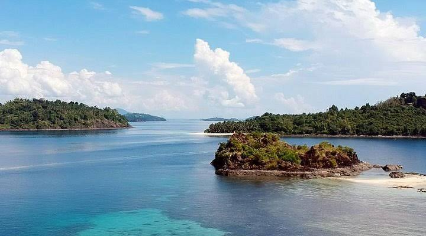

Dao-Dao Islands
The Dao-Dao Islands are a group of small islets near Pagadian City. Known for their clear turquoise waters and white sandy shores, they are perfect for swimming, snorkeling, and island hopping with friends and family.
Pulacan Falls

Pulacan Falls in Labangan is a scenic waterfall cascading into natural pools. Surrounded by lush greenery, it is a popular picnic and camping destination, offering a refreshing retreat close to nature.
Puting Balas Sandbar

Puting Balas Sandbar appears during low tide in Pagadian City. Its pristine white sand and crystal-clear waters make it a peaceful spot to relax, swim, and enjoy a unique beach experience.
Manga Falls
.jpeg)
Manga Falls is a twin waterfall located just a short drive from Pagadian. Nestled in a forest reserve, it’s an ideal destination for nature lovers who want to enjoy photography, hiking, and a refreshing swim.
Mt. Susong Dalaga
.jpeg)
Mt. Susong Dalaga, with its cone-shaped peak, is a popular trekking destination. Adventurers who hike to the summit are rewarded with panoramic views of Pagadian City and the surrounding landscapes.